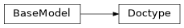

docbuild.cli.cmd_build.Doctype#
- class docbuild.cli.cmd_build.Doctype(/, **data: Any)#
Bases:
pydantic.BaseModelA “doctype” that comprises of a product, docset, lifecycle, and language.
>>> doctype = Doctype.from_str("sles/15-SP6@supported/en-us,de-de") >>> doctype.product <Product.sles: 'sles'> >>> doctype.docset ['15-SP6'] >>> doctype.lifecycle.name 'supported' >>> doctype.langs [LanguageCode(language='de-de'), LanguageCode(language='en-us')]
- product: docbuild.models.product.Product = None#
A SUSE product is a lowercase acronym
- lifecycle: docbuild.models.lifecycle.LifecycleFlag = None#
The state (supported, beta, etc.) of the Doctype
- langs: list[docbuild.models.language.LanguageCode] = None#
A natural language containing language and country
- __contains__(other: Doctype) bool#
Return if bool(other in self).
Every part of a Doctype is compared element-wise.
- classmethod coerce_product(value: str | docbuild.models.product.Product) docbuild.models.product.Product#
Convert a string into a valid Product.
- classmethod coerce_lifecycle(value: str | docbuild.models.lifecycle.LifecycleFlag) docbuild.models.lifecycle.BaseLifecycleFlag#
Convert a string into a LifecycleFlag.
- classmethod coerce_langs(value: str | list[str | docbuild.models.language.LanguageCode]) list[docbuild.models.language.LanguageCode]#
Convert a comma-separated string or a list of strings into LanguageCode.
- classmethod from_str(doctype_str: str) Self#
Parse a string that adheres to the doctype format.
The format has the following syntax:
[PRODUCT]/[DOCSETS][@LIFECYCLES]/LANGS
Plural means you can have one or more items:
PRODUCT: a lowercase acronym of a SUSE product, e.g.slesDOCSETS: separated by commaLIFECYCLES: separated by comma or pipeLANGS: separated by comma
- xpath() str#
Return an XPath expression for this Doctype to find all deliverables.
>>> result = Doctype.from_str("sles/15-SP6@supported/en-us,de-de").xpath() >>> expected = ( ... "product[@productid='sles']/docset[@setid='15-SP6']" ... "[@lifecycle='supported']" ... "/builddocs/language[@lang='de-de' or @lang='en-us']" ... ) >>> result == expected True
- Returns:
A relative XPath expression that can be used to find all deliverables that match this Doctype.
- model_config: ClassVar[pydantic.config.ConfigDict]#
Configuration for the model, should be a dictionary conforming to [ConfigDict][pydantic.config.ConfigDict].
- __private_attributes__: ClassVar[Dict[str, pydantic.fields.ModelPrivateAttr]]#
Metadata about the private attributes of the model.
- __signature__: ClassVar[inspect.Signature]#
The synthesized __init__ [Signature][inspect.Signature] of the model.
- __pydantic_complete__: ClassVar[bool] = False#
Whether model building is completed, or if there are still undefined fields.
- __pydantic_core_schema__: ClassVar[pydantic_core.CoreSchema]#
The core schema of the model.
- __pydantic_decorators__: ClassVar[pydantic._internal._decorators.DecoratorInfos]#
Metadata containing the decorators defined on the model. This replaces Model.__validators__ and Model.__root_validators__ from Pydantic V1.
- __pydantic_generic_metadata__: ClassVar[pydantic._internal._generics.PydanticGenericMetadata]#
Metadata for generic models; contains data used for a similar purpose to __args__, __origin__, __parameters__ in typing-module generics. May eventually be replaced by these.
- __pydantic_parent_namespace__: ClassVar[Dict[str, Any] | None] = None#
Parent namespace of the model, used for automatic rebuilding of models.
- __pydantic_post_init__: ClassVar[None | Literal['model_post_init']]#
The name of the post-init method for the model, if defined.
- __pydantic_root_model__: ClassVar[bool] = False#
Whether the model is a [RootModel][pydantic.root_model.RootModel].
- __pydantic_serializer__: ClassVar[pydantic_core.SchemaSerializer]#
The pydantic-core SchemaSerializer used to dump instances of the model.
- __pydantic_validator__: ClassVar[pydantic_core.SchemaValidator | pydantic.plugin._schema_validator.PluggableSchemaValidator]#
The pydantic-core SchemaValidator used to validate instances of the model.
- __pydantic_fields__: ClassVar[Dict[str, pydantic.fields.FieldInfo]]#
A dictionary of field names and their corresponding [FieldInfo][pydantic.fields.FieldInfo] objects. This replaces Model.__fields__ from Pydantic V1.
- __pydantic_setattr_handlers__: ClassVar[Dict[str, Callable[[BaseModel, str, Any], None]]]#
__setattr__ handlers. Memoizing the handlers leads to a dramatic performance improvement in __setattr__
- __pydantic_computed_fields__: ClassVar[Dict[str, pydantic.fields.ComputedFieldInfo]]#
A dictionary of computed field names and their corresponding [ComputedFieldInfo][pydantic.fields.ComputedFieldInfo] objects.
- __pydantic_extra__: dict[str, Any] | None#
A dictionary containing extra values, if [extra][pydantic.config.ConfigDict.extra] is set to ‘allow’.
- __pydantic_private__: dict[str, Any] | None#
Values of private attributes set on the model instance.
- classmethod model_fields() dict[str, pydantic.fields.FieldInfo]#
A mapping of field names to their respective [FieldInfo][pydantic.fields.FieldInfo] instances.
- !!! warning
Accessing this attribute from a model instance is deprecated, and will not work in Pydantic V3. Instead, you should access this attribute from the model class.
- classmethod model_computed_fields() dict[str, pydantic.fields.ComputedFieldInfo]#
A mapping of computed field names to their respective [ComputedFieldInfo][pydantic.fields.ComputedFieldInfo] instances.
- !!! warning
Accessing this attribute from a model instance is deprecated, and will not work in Pydantic V3. Instead, you should access this attribute from the model class.
- property model_extra: dict[str, Any] | None#
Get extra fields set during validation.
- Returns:
A dictionary of extra fields, or None if config.extra is not set to “allow”.
- property model_fields_set: set[str]#
Returns the set of fields that have been explicitly set on this model instance.
- Returns:
- A set of strings representing the fields that have been set,
i.e. that were not filled from defaults.
- classmethod model_construct(_fields_set: set[str] | None = None, **values: Any) typing_extensions.Self#
Creates a new instance of the Model class with validated data.
Creates a new model setting __dict__ and __pydantic_fields_set__ from trusted or pre-validated data. Default values are respected, but no other validation is performed.
- !!! note
model_construct() generally respects the model_config.extra setting on the provided model. That is, if model_config.extra == ‘allow’, then all extra passed values are added to the model instance’s __dict__ and __pydantic_extra__ fields. If model_config.extra == ‘ignore’ (the default), then all extra passed values are ignored. Because no validation is performed with a call to model_construct(), having model_config.extra == ‘forbid’ does not result in an error if extra values are passed, but they will be ignored.
- Args:
- _fields_set: A set of field names that were originally explicitly set during instantiation. If provided,
this is directly used for the [model_fields_set][pydantic.BaseModel.model_fields_set] attribute. Otherwise, the field names from the values argument will be used.
values: Trusted or pre-validated data dictionary.
- Returns:
A new instance of the Model class with validated data.
- model_copy(*, update: collections.abc.Mapping[str, Any] | None = None, deep: bool = False) typing_extensions.Self#
- !!! abstract “Usage Documentation”
[model_copy](../concepts/serialization.md#model_copy)
Returns a copy of the model.
- !!! note
The underlying instance’s [__dict__][object.__dict__] attribute is copied. This might have unexpected side effects if you store anything in it, on top of the model fields (e.g. the value of [cached properties][functools.cached_property]).
- Args:
- update: Values to change/add in the new model. Note: the data is not validated
before creating the new model. You should trust this data.
deep: Set to True to make a deep copy of the model.
- Returns:
New model instance.
- model_dump(*, mode: Literal['json', 'python'] | str = 'python', include: IncEx | None = None, exclude: IncEx | None = None, context: Any | None = None, by_alias: bool | None = None, exclude_unset: bool = False, exclude_defaults: bool = False, exclude_none: bool = False, round_trip: bool = False, warnings: bool | Literal['none', 'warn', 'error'] = True, fallback: Callable[[Any], Any] | None = None, serialize_as_any: bool = False) dict[str, Any]#
- !!! abstract “Usage Documentation”
[model_dump](../concepts/serialization.md#modelmodel_dump)
Generate a dictionary representation of the model, optionally specifying which fields to include or exclude.
- Args:
- mode: The mode in which to_python should run.
If mode is ‘json’, the output will only contain JSON serializable types. If mode is ‘python’, the output may contain non-JSON-serializable Python objects.
include: A set of fields to include in the output. exclude: A set of fields to exclude from the output. context: Additional context to pass to the serializer. by_alias: Whether to use the field’s alias in the dictionary key if defined. exclude_unset: Whether to exclude fields that have not been explicitly set. exclude_defaults: Whether to exclude fields that are set to their default value. exclude_none: Whether to exclude fields that have a value of None. round_trip: If True, dumped values should be valid as input for non-idempotent types such as Json[T]. warnings: How to handle serialization errors. False/”none” ignores them, True/”warn” logs errors,
“error” raises a [PydanticSerializationError][pydantic_core.PydanticSerializationError].
- fallback: A function to call when an unknown value is encountered. If not provided,
a [PydanticSerializationError][pydantic_core.PydanticSerializationError] error is raised.
serialize_as_any: Whether to serialize fields with duck-typing serialization behavior.
- Returns:
A dictionary representation of the model.
- model_dump_json(*, indent: int | None = None, include: IncEx | None = None, exclude: IncEx | None = None, context: Any | None = None, by_alias: bool | None = None, exclude_unset: bool = False, exclude_defaults: bool = False, exclude_none: bool = False, round_trip: bool = False, warnings: bool | Literal['none', 'warn', 'error'] = True, fallback: Callable[[Any], Any] | None = None, serialize_as_any: bool = False) str#
- !!! abstract “Usage Documentation”
[model_dump_json](../concepts/serialization.md#modelmodel_dump_json)
Generates a JSON representation of the model using Pydantic’s to_json method.
- Args:
indent: Indentation to use in the JSON output. If None is passed, the output will be compact. include: Field(s) to include in the JSON output. exclude: Field(s) to exclude from the JSON output. context: Additional context to pass to the serializer. by_alias: Whether to serialize using field aliases. exclude_unset: Whether to exclude fields that have not been explicitly set. exclude_defaults: Whether to exclude fields that are set to their default value. exclude_none: Whether to exclude fields that have a value of None. round_trip: If True, dumped values should be valid as input for non-idempotent types such as Json[T]. warnings: How to handle serialization errors. False/”none” ignores them, True/”warn” logs errors,
“error” raises a [PydanticSerializationError][pydantic_core.PydanticSerializationError].
- fallback: A function to call when an unknown value is encountered. If not provided,
a [PydanticSerializationError][pydantic_core.PydanticSerializationError] error is raised.
serialize_as_any: Whether to serialize fields with duck-typing serialization behavior.
- Returns:
A JSON string representation of the model.
- classmethod model_json_schema(by_alias: bool = True, ref_template: str = DEFAULT_REF_TEMPLATE, schema_generator: type[pydantic.json_schema.GenerateJsonSchema] = GenerateJsonSchema, mode: pydantic.json_schema.JsonSchemaMode = 'validation') dict[str, Any]#
Generates a JSON schema for a model class.
- Args:
by_alias: Whether to use attribute aliases or not. ref_template: The reference template. schema_generator: To override the logic used to generate the JSON schema, as a subclass of
GenerateJsonSchema with your desired modifications
mode: The mode in which to generate the schema.
- Returns:
The JSON schema for the given model class.
- classmethod model_parametrized_name(params: tuple[type[Any], Ellipsis]) str#
Compute the class name for parametrizations of generic classes.
This method can be overridden to achieve a custom naming scheme for generic BaseModels.
- Args:
- params: Tuple of types of the class. Given a generic class
Model with 2 type variables and a concrete model Model[str, int], the value (str, int) would be passed to params.
- Returns:
String representing the new class where params are passed to cls as type variables.
- Raises:
TypeError: Raised when trying to generate concrete names for non-generic models.
- model_post_init(context: Any, /) None#
Override this method to perform additional initialization after __init__ and model_construct. This is useful if you want to do some validation that requires the entire model to be initialized.
- classmethod model_rebuild(*, force: bool = False, raise_errors: bool = True, _parent_namespace_depth: int = 2, _types_namespace: pydantic._internal._namespace_utils.MappingNamespace | None = None) bool | None#
Try to rebuild the pydantic-core schema for the model.
This may be necessary when one of the annotations is a ForwardRef which could not be resolved during the initial attempt to build the schema, and automatic rebuilding fails.
- Args:
force: Whether to force the rebuilding of the model schema, defaults to False. raise_errors: Whether to raise errors, defaults to True. _parent_namespace_depth: The depth level of the parent namespace, defaults to 2. _types_namespace: The types namespace, defaults to None.
- Returns:
Returns None if the schema is already “complete” and rebuilding was not required. If rebuilding _was_ required, returns True if rebuilding was successful, otherwise False.
- classmethod model_validate(obj: Any, *, strict: bool | None = None, from_attributes: bool | None = None, context: Any | None = None, by_alias: bool | None = None, by_name: bool | None = None) typing_extensions.Self#
Validate a pydantic model instance.
- Args:
obj: The object to validate. strict: Whether to enforce types strictly. from_attributes: Whether to extract data from object attributes. context: Additional context to pass to the validator. by_alias: Whether to use the field’s alias when validating against the provided input data. by_name: Whether to use the field’s name when validating against the provided input data.
- Raises:
ValidationError: If the object could not be validated.
- Returns:
The validated model instance.
- classmethod model_validate_json(json_data: str | bytes | bytearray, *, strict: bool | None = None, context: Any | None = None, by_alias: bool | None = None, by_name: bool | None = None) typing_extensions.Self#
- !!! abstract “Usage Documentation”
[JSON Parsing](../concepts/json.md#json-parsing)
Validate the given JSON data against the Pydantic model.
- Args:
json_data: The JSON data to validate. strict: Whether to enforce types strictly. context: Extra variables to pass to the validator. by_alias: Whether to use the field’s alias when validating against the provided input data. by_name: Whether to use the field’s name when validating against the provided input data.
- Returns:
The validated Pydantic model.
- Raises:
ValidationError: If json_data is not a JSON string or the object could not be validated.
- classmethod model_validate_strings(obj: Any, *, strict: bool | None = None, context: Any | None = None, by_alias: bool | None = None, by_name: bool | None = None) typing_extensions.Self#
Validate the given object with string data against the Pydantic model.
- Args:
obj: The object containing string data to validate. strict: Whether to enforce types strictly. context: Extra variables to pass to the validator. by_alias: Whether to use the field’s alias when validating against the provided input data. by_name: Whether to use the field’s name when validating against the provided input data.
- Returns:
The validated Pydantic model.
- classmethod __get_pydantic_json_schema__(core_schema: pydantic_core.CoreSchema, handler: pydantic.annotated_handlers.GetJsonSchemaHandler, /) pydantic.json_schema.JsonSchemaValue#
Hook into generating the model’s JSON schema.
- Args:
- core_schema: A pydantic-core CoreSchema.
You can ignore this argument and call the handler with a new CoreSchema, wrap this CoreSchema ({‘type’: ‘nullable’, ‘schema’: current_schema}), or just call the handler with the original schema.
- handler: Call into Pydantic’s internal JSON schema generation.
This will raise a pydantic.errors.PydanticInvalidForJsonSchema if JSON schema generation fails. Since this gets called by BaseModel.model_json_schema you can override the schema_generator argument to that function to change JSON schema generation globally for a type.
- Returns:
A JSON schema, as a Python object.
- classmethod __pydantic_init_subclass__(**kwargs: Any) None#
This is intended to behave just like __init_subclass__, but is called by ModelMetaclass only after the class is actually fully initialized. In particular, attributes like model_fields will be present when this is called.
This is necessary because __init_subclass__ will always be called by type.__new__, and it would require a prohibitively large refactor to the ModelMetaclass to ensure that type.__new__ was called in such a manner that the class would already be sufficiently initialized.
This will receive the same kwargs that would be passed to the standard __init_subclass__, namely, any kwargs passed to the class definition that aren’t used internally by pydantic.
- Args:
- **kwargs: Any keyword arguments passed to the class definition that aren’t used internally
by pydantic.
- __copy__() typing_extensions.Self#
Returns a shallow copy of the model.
- __deepcopy__(memo: dict[int, Any] | None = None) typing_extensions.Self#
Returns a deep copy of the model.
- classmethod __init_subclass__(**kwargs: typing_extensions.Unpack[pydantic.config.ConfigDict])#
This signature is included purely to help type-checkers check arguments to class declaration, which provides a way to conveniently set model_config key/value pairs.
```python from pydantic import BaseModel
class MyModel(BaseModel, extra=’allow’): … ```
However, this may be deceiving, since the _actual_ calls to __init_subclass__ will not receive any of the config arguments, and will only receive any keyword arguments passed during class initialization that are _not_ expected keys in ConfigDict. (This is due to the way ModelMetaclass.__new__ works.)
- Args:
**kwargs: Keyword arguments passed to the class definition, which set model_config
- Note:
You may want to override __pydantic_init_subclass__ instead, which behaves similarly but is called after the class is fully initialized.
- __iter__() TupleGenerator#
So dict(model) works.
- copy(*, include: pydantic._internal._utils.AbstractSetIntStr | pydantic._internal._utils.MappingIntStrAny | None = None, exclude: pydantic._internal._utils.AbstractSetIntStr | pydantic._internal._utils.MappingIntStrAny | None = None, update: Dict[str, Any] | None = None, deep: bool = False) typing_extensions.Self#
Returns a copy of the model.
- !!! warning “Deprecated”
This method is now deprecated; use model_copy instead.
If you need include or exclude, use:
`python {test="skip" lint="skip"} data = self.model_dump(include=include, exclude=exclude, round_trip=True) data = {**data, **(update or {})} copied = self.model_validate(data) `- Args:
include: Optional set or mapping specifying which fields to include in the copied model. exclude: Optional set or mapping specifying which fields to exclude in the copied model. update: Optional dictionary of field-value pairs to override field values in the copied model. deep: If True, the values of fields that are Pydantic models will be deep-copied.
- Returns:
A copy of the model with included, excluded and updated fields as specified.